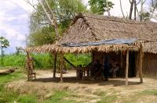

|
Vendredi 19 octobre
Pourtant on est au courant qu'il ne faut pas les croire. Mais là, on a relâché
notre attention. Résultat, le gars qui nous a vendu notre billet hier -pour
une fois qu'on réserve- et qui faute d'avoir rempli son bus nous a refourgués
à une autre compagnie, ce type donc, soit n'était pas au courant, soit nous
a vilainement menti en affirmant qu'il y avait une correspondance le soir à
Santa cruz pour Trinidad. En fait, il est 21H00, on vient d'arriver et le dernier
départ vers Trinidad éait vers 19H30. Enfer et damnation!!!
Bon et bien ce n'est pas grave, on va voir un peu à quoi ressemble Santa Cruz
de la Sierra.
La route pour arriver ici a été longue, mais longue... 12 heures. Mais elle
n'a pas manqué d'intérêts. D'abord, un départ un peu laborieux, on a l'impression
de faire 3 fois le tour de la ville, mais il faut bien qu'ils remplissent leur
bus alors on attend... Et puis ca part. Le paysage est joli mais classique par
rapport à ce que l'on a déjà vu jusqu'ici de la région des hauts plateaux. Et
puis, tout d'un coup, tout chamge brutalement, après une petite période de transition
tout de même où les arbres commencent à pointer leur nez, même s'il semble s'agir
de plantations. Et puis le bus descend, la température remonte. Ca y est, on
est dans la jungle amazonienne. La végétation est extrêment dense, elle recouvre
les colines qui bordent la route, on n'apercoit plus un centimètre de sol. Des
fougères géantes, des bananiers, des arbres à palmes et des oiseaux... Et partout,
des cours d'eau où les gens se baignent. Si on ajoute le maisons en bois sur
pilotis, on a un peu l'impression d'être retournés au Laos. On se dit qu'on
ne va plus quitter cette végétation pour un bon bout de temps.
Le bus crève, on perd une heure. Puis c'est la pause déjeuner, mais il fait
tellement chaud, tellement lourd sous les nuages gris qu'on n'a pas envie de
manger grand chose. Alors on repart avec une simple soupe -une vraie tradition
ici- dans l'estomac.
Et puis la végétation devient à nouveau moins dense, davantage travaillée par
l'homme. Des champs déboisés, des arbres beaucoup plus parsemés et de grands
prés immenses où broutent des troupeaux grands de peut-être 100 bovins... Ce
qui nous change des 3 ou 4 bêtes gardées par les bergères à jupons de l'Altiplano!
Enfin on arrive, on met au moins 1 heure pour traverser la périphérie et rentrer
dans la ville. C'est propre, moderne, beaucoup d'usines et de complexes industriels.
On est dans la plus grande ville de Bolivie. La plus dynamique aussi... Il est
21H00, on a la dalle, normal t'avais qu'à mieux manger à midi répondraient avec
raison nos mères!
Samedi 20 octobre
Moderne, propre, jolie avec ses maisons basses et ses arcades, Santa Cruz est
une ville agréable mais peu dépaysante. Très animée, c'est sympa de s'y promener
malgré la chaleur et l'humidité! Heureusement un fort vent nous soulage. Qu'est
ce qu'on transpire malgré nos shorts! Hé oui, la France s'approche de l'hiver
et nous on sort nos shorts tout froissés...
Le soir, bus pour Trinidad. Mais quel confort, bus panoramique (c'est vrai
que pour la nuit ce n'est pas franchement utile...). On part à 19H30, une demi
heure plus tard, arrêt dîner éclair. 15 minutes! On a à peine le temps de tout
engloutir et de faire pipi! Vite, vite! A 4H00 du mat, on arrive à Trinidad
et le chauffeur nous laisse dormir dans le bus jusqu'à 6H00, merci.
Dimanche 21 octobre
Direction le centre de Trinidad où l'on tombe encore une fois sur une place
superbement arborée et fleurie. Celle-ci est même habitée par de jolis perroquets
verts. C'est pour nous rappeler qu'on est en Amazonie. Il est 6H30 du mat et
plein de gamins cireurs de chaussures sont déjà là à chercher des clients. Peut-être
attendent-ils la sortie de l'église? Car c'est l'heure de la messe et l'église
est -comme toujours par ici- pleine à craquer. La ville est faite de maison
basses, de rues pavées et d'arcades. Et on comprend vite pourquoi. Un orage
éclate alors qu'on se boit tranquillement un jus d'orange. Ici, peu de voiture
mais plein de mobs et de moto-taxis. On a même vu 4 personnes à la fois sur
une mob, ce n'était pas arrivé depuis l'Asie... Ha, et puis je crois que c'est
notre première ville sur ce continent avec des égoûts ouverts... Ca pue!
On opte pour la poursuite immédiate du voyage vers Rurrenabaque. On est trempés,
il pleut touours mais il fait lourd. Le bus (il y en a 4 ou 5 par semaine) part
à 10H30 et surprise de taille coûte... 130 bolivianos!!! jusqu'alors, on n'a
jamias payé plus de 30... Le trajet doit durer 12 heures, 12 heures de piste.
On a donc tout le temps de manger nos empanadas au fromage (chaussons fourrés)
dans une échoppe familiale, boire un thé, regarder les 101 dalmatiens sur la
télé du terminal (hé oui, ca à l'air tout vieillot mais la modernité est bien
là...) et les gosses scotchés à l'écran, sauf deux passionnés par leur jeu de
toupies à ficelle.
On ne partira pas si la pluie continue. Le temps passe, elle s'arrête. On charge
le bus, en fait, on entasse tout sur le toit et on lie avec une bâche. Pourvu
que cela tienne bien. A midi, on part enfin. Il y a 40 places dans ce bus mais
on doit être 50 ou 55... sans compter les poules, le perroquet vert sur l'épaule
de notre voisine, ni le chiot qui - pensons-nous - va pisser partout. Mais bon,
les gosses aussi et ils sont nombreux. Pas d'ados, on n'en voit quasi jamais
dans les bus, mais des familles qui s'entassent à 3 ou 4 sur deux sièges. C'est
sûrememnt pour se tenir chaud. Cinq minutes après notre départ, on s'arrête
pour faire le plein d'essence. C'est curieux cette manie qu'ils ont d'attendre
que le bus soit chargé pour le faire! C'est long, on a chaud. Et enfin, en route
à travers la superbe végétation. Vingt minutes plus tard démarre la piste. Mais
nos sièges sont confortables comme toujours. En quittant l'Argentine, on pensait
retrouver des bus bien pourris. Et bien pas du tout, ils sont même plutôt en
bon état, voire excellent pour certains. Mais pas toujours la route...
Sur la route, on voit plei d'echassiers, des grands (jusqu'à 1m30), des moyens,
des petits, plein de superbes oiseaux colorés qui noirs à queue jaune ou rouge,
qui bleu violet ou encore ces envols de perroquets verts bavards. On voit aussi
de drôles d'animaux ressemblant fort à des marmottes longs de 1 à 2m et heuts
comme des cochons. Si on voit tout cela, c'est parce que la forêt a été rasée.
Il en reste tout de même, mais les arbres, bien que hauts de 30 mètres pour
certains, sont jeunes et fins. A la place, des fermes d'élevage énormes de zébus
ou de chevaux. On croise d'ailleurs des troupeaux de fiers zébus avec leur bosse
et leurs immenses cornes dressées vers le ciel. Les cavaliers qui les accompagnent
ont fort à faire, le bus les effraie.
A 17H30, premier arrêt pipi!!! En rase campagne bien entendu... merci les gars.
A 19H00, arrêt dîner et on repart. L'orage éclate, on secroirait à la fête foraine.
Notre voisin se bouche les oreilles, je crois qu'il a la trouille! Les éclairs
sont si nombreux et violents qu'il y a autant de moments d'obscurité que de
clarté! Un vraie boîte de nuit assez éblouissante. La piste se transforme en
boue, le bus peine, glisse, patauge, dérape un peu mais ouf, on ne s'embourbe
pas. Par contre, ca nous ralentit, c'est sûr. A 2H00 du matin, arrêt à la station
essence. C'est là que le chauffeur décide de nous larguer en compagnie de 2
australiennes, de trois boliviens là pour mettre en place la réforme agraire
et un autre avec ses deux gros paquets et son carton de poules. Il pleut toujours.
"Rurrenabaque, c'est par là, à 500 mètres!". Une heure et demie plus tard, on
marche toujours. Cet empaffé nous a largués à 2H00 du mat sous la pluie, en
pleine forêt amazonienne et à 2km du village. Heureusement qu'on a des lampes
et les 3 boliviens avec nous, Roberto, Fernando et Rodolfo. Celui avec ses poules
attend on ne sait quoi au bord de la route. L'une des deux australiennes est
crevée et nous égaie en se retrouvant sans cesse sur les fesses! Il faut dire
que ca glisse drôlement et avec les gros sacs, c'est rude. Il pleut toujours.
La forêt et ses bruits nocturnes nous entourent. Moi, je trouve ca chouette!
A 3H30 du matin, c'est dans la bonne humeur qu'on réveille un hôtelier charmant.
Une bonne douche et bonne nuit!
Suite du voyage : Rurrenabaque
|
Bolivie
Santa cruz
|
Bolivie
Trinidad
|
Bolivie
Trinidad
|
Bolivie
Trinidad
|
Bolivie
Trinidad - Rurrenabaque
|
Bolivie
Trinidad - Rurrenabaque
|
Bolivie
Trinidad - Rurrenabaque
|

Bolivie
Trinidad - Rurrenabaque
|
|
|